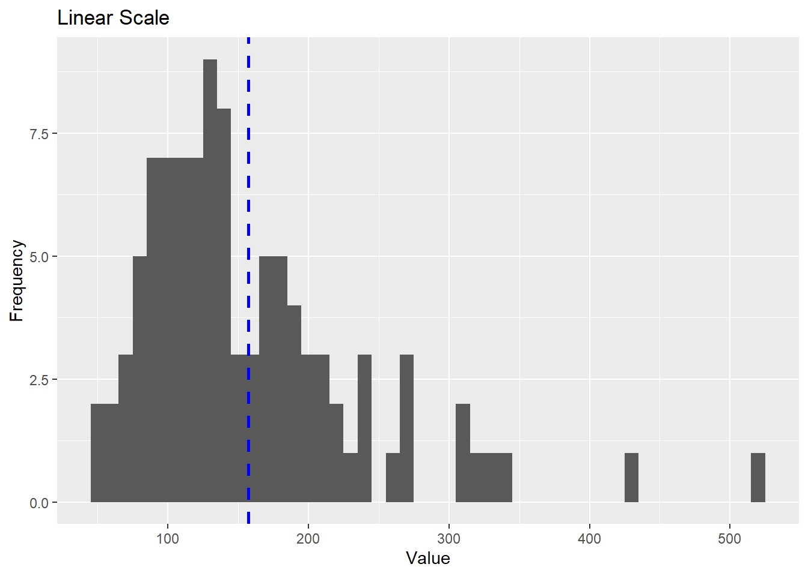
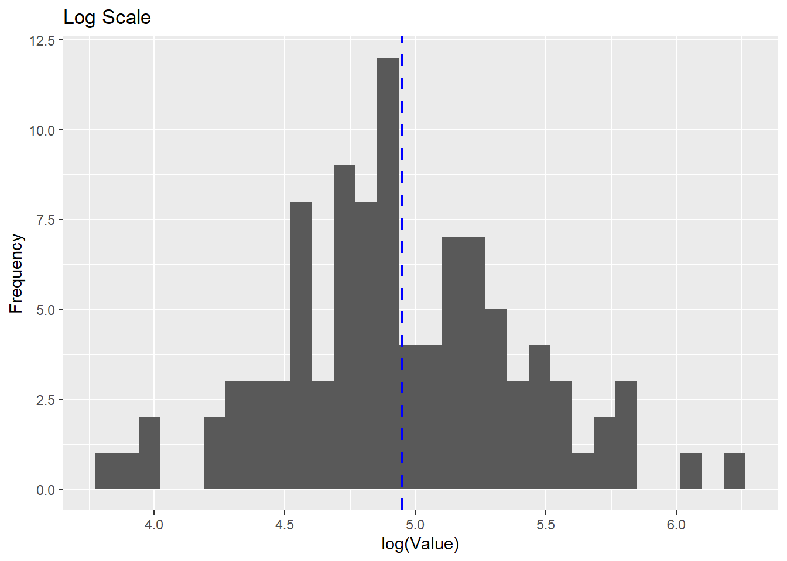
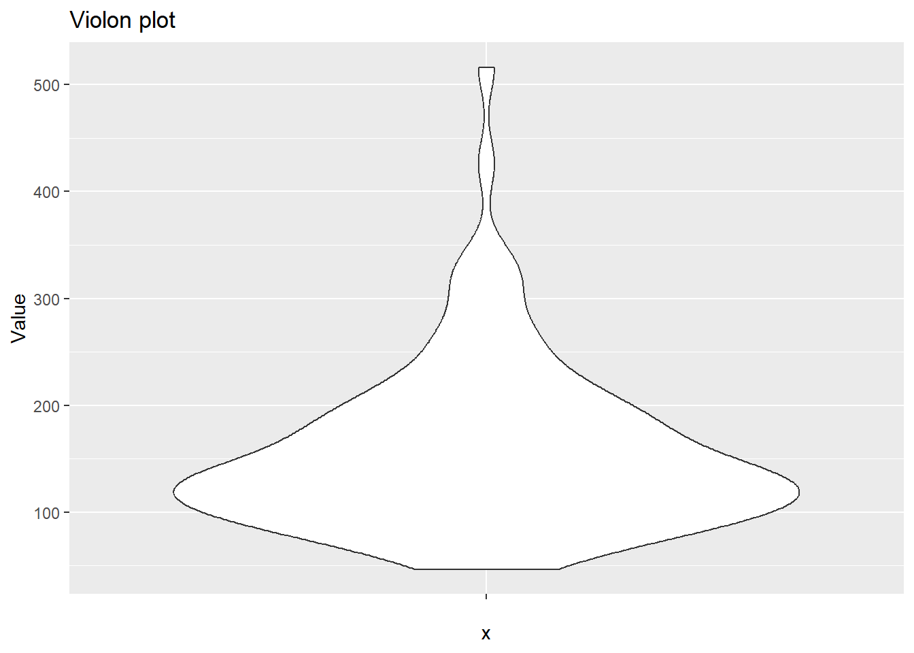
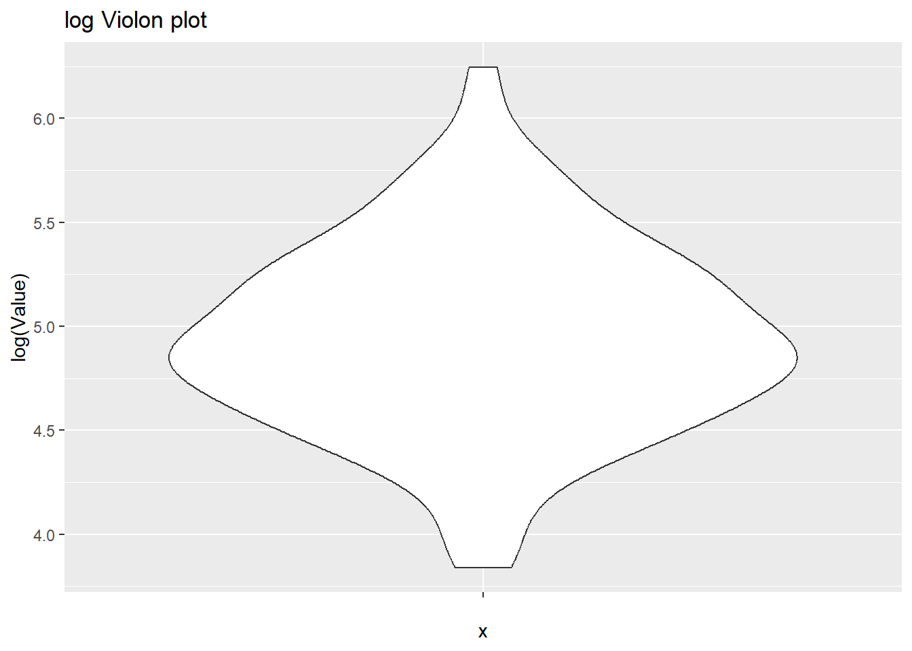

print('Hello VSCode')[1] "Hello VSCode"This is normal Text.
print('Hello VSCode')[1] "Hello VSCode"In the following code we first set a seed to make our results reproducible and then we just drew the 100 samples from a log-norm distribution using the function rlnorm.
set.seed(69)
mu <- 5
sigma <- 0.5
samples <- rlnorm(100, meanlog = mu, sdlog = sigma)
df <- data.frame(samples)
#print(colnames(df))Now we actually want to plot our results. For this reason, we import the ggplot library, which looks great. We can see that the log norm behaves “normally” with the tailing to the right on the linear scale and the nice normal curve after applying the log scale - with the mean at the expected place.
library("ggplot2")Warning: package 'ggplot2' was built under R version 4.2.3# Basic histogram
linear_hist <- ggplot(df, aes(x = samples)) +
geom_histogram(binwidth = 10) +
geom_vline(aes(xintercept=mean(samples)),
color="blue", linetype="dashed", linewidth=1) +
labs(title = "Linear Scale", x = "Value", y = "Frequency")
linear_hist
# Create a log scale histogram
log_hist <- ggplot(df, aes(x = log(samples))) +
geom_histogram() +
geom_vline(aes(xintercept=mean(log(samples))),
color="blue", linetype="dashed", linewidth=1) +
labs(title = "Log Scale", x = "log(Value)", y = "Frequency")
log_hist`stat_bin()` using `bins = 30`. Pick better value with `binwidth`.
Now we are focusing on Violon Plots:
violin <- ggplot(df, aes(x = "", y = samples)) +
geom_violin() +
labs(title = "Violon plot", y = "Value")
violin
log_violin <- ggplot(df, aes(x = "", y = log(samples))) +
geom_violin() +
labs(title = "log Violon plot", y = "log(Value)")
log_violin
The mean is 157.133, with a log of 5.057. The standard deviation is 79.492, with a log of 4.376.